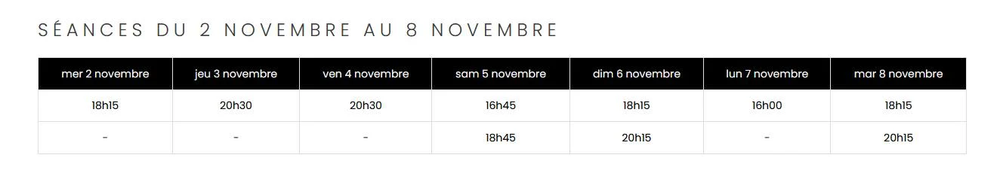
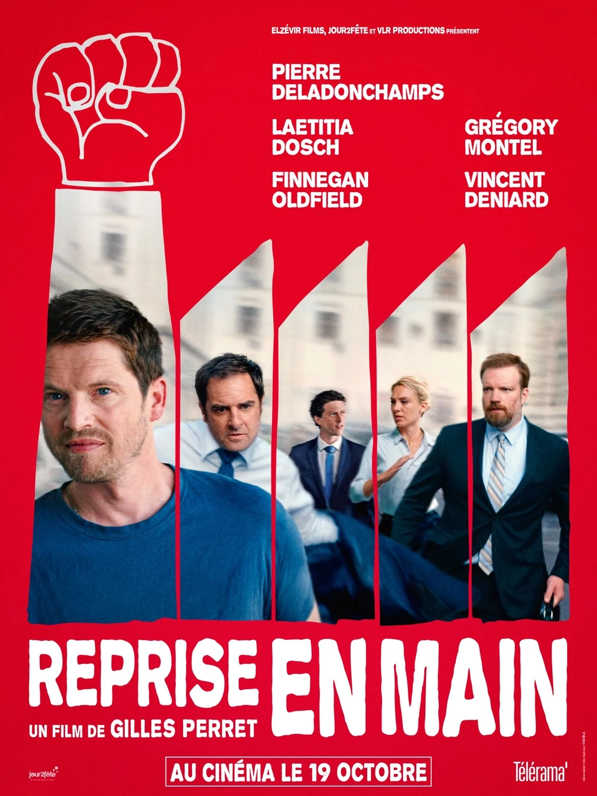

Publication d’archives
"Reprise en mains" de Gilles Perret : une autre histoire ouvrière
Date indiquée par Facebook · 1 novembre 2022
Texte conservé avec la publication
Contexte du dossier
Le 26 octobre 2021, la page présente La Fracture de Catherine Corsini : l’hôpital, ses personnels et les distances entre milieux sociaux y deviennent matière de cinéma. Le 1er novembre 2022, elle recommande Reprise en main de Gilles Perret, projeté au Moulin du Roc. La fiction ouvrière y est saluée pour ouvrir une perspective de victoire des travailleurs face à la finance. Ces films n’ont pas la même forme, mais leur relais exprime une attente commune : voir les rapports sociaux, les métiers et les capacités d’action collective entrer dans les récits qui circulent au grand écran.


Sources
Archive rouge · export Facebook · AR-0002-FB-01822
À lire aussi · #Qatar2022 « Je comprends ces mouvements de boycott. Mais c’est trop tard, il fallait se révolter il y a 12…